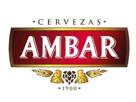

<!DOCTYPE html>
<html>
    <head>
        <title>Bares que frecuento en Zaragoza</title>
        <meta name="viewport" content="width=device-width, initial-scale=1.0, maximum-scale=1.0, user-scalable=no"> 
        <link rel="stylesheet" href="css/leaflet.css"> 
        <script src="js/leaflet.js"></script>
        <style> 
           body { 
             padding: 0; 
             margin: 0; 
             } 
           html, body, #map { 
            height: 100%; 
            width: 100%; 
            }
           .legend {
            width: 230px;
            font-size: 12px;
            color: #333333;
            font-family: "Helvetica", "Calibri", sans-serif;
            padding: 10px 12px;
            background-color: rgb(204, 238, 172) ;
            box-shadow: 0 0 10px rgba(3, 3, );
            border-radius: 60px;
            border: 3px solid rgb(24, 23, 23);
        }
           .legend img {
            width: 180px;
            height: 120px; 
            margin: auto;
            display: block;
        }
        </style>
    </head>
<body>
        <div id="map"></div> 
        <script>
        let mapa1_SR = L.tileLayer('https://{s}.tile.openstreetmap.org/{z}/{x}/{y}.png', 
            {attribution: '&copy; <a href="http://' + 'www.openstreetmap.org/copyright">OpenStreetMap</a>'});
        let mapa2_SR = L.tileLayer('https://server.arcgisonline.com/ArcGIS/rest/services/World_Imagery/MapServer/tile/{z}/{y}/{x}', {
        attribution: 'Tiles &copy; Esri &mdash; Source: Esri, i-cubed, USDA, USGS, AEX, GeoEye, Getmapping, Aerogrid, IGN, IGP, UPR-EGP, and the GIS User Community'});
        
        let map = L.map("map", {center: [41.64260, -0.90033], zoom: 16, layers: [mapa1_SR, mapa2_SR]});
    let baseMaps = {
        "Imagen de satélite_ESRI": mapa2_SR,
        "OpenStreetMap": mapa1_SR
    };

    var cerve = L.icon({
        iconUrl: 'https://upload.wikimedia.org/wikipedia/commons/9/9b/Emoji_u1f37b.svg',
        iconSize:     [65, 65],
        iconAnchor:   [22, 37], 
    });
    var hamburguesa = L.icon({
        iconUrl: 'https://upload.wikimedia.org/wikipedia/commons/b/b5/Emoji_u1f354.svg',
        iconSize:     [40, 40],
        iconAnchor:   [22, 37], 
    });
    var chocolate = L.icon({
        iconUrl: 'https://upload.wikimedia.org/wikipedia/commons/0/0e/Emojione_1F36B.svg',
        iconSize:     [40, 40],
        iconAnchor:   [22, 37], 
    });
    
    L.control.layers(baseMaps). addTo(map);
        let barcuberos = L.marker([41.64966, -0.90236],
            {title: "Gastro Bar Cuberos", icon: hamburguesa}).addTo(map);
        let bartuno = L.marker([41.64074, -0.89704],
            {title: "Bar Tuno",icon: hamburguesa}).addTo(map);
        let baratrio = L.marker([41.64123, -0.88789],
            {title: "Bar Atrio", icon: cerve}).addTo(map);
        let barbreton =  L.marker([41.64428, -0.89503],
            {title: "Bar Bretón", icon: cerve}).addTo(map);   
        let pepegarden = L.marker([41.63458, -0.89826],
            {title: "Pepe Garden", icon: cerve}).addTo(map);
        let chocoporta = L.marker([41.64327, -0.88831],
            {title: "Chocolatería Porta", icon: chocolate}).addTo(map);
        let barcavas = L.marker([41.64528, -0.89706],
            {title: "Bar Cavas", icon: cerve}).addTo(map);      
        let barmontesol = L.marker([41.64514, -0.90012], 
            {title: "Bar Montesol",icon: hamburguesa}).addTo(map);
        
    let ruta_comida = L.polyline(
[[41.64966, -0.90236], [41.64514, -0.90012], [41.64074, -0.89704],[41.64327, -0.88831]],
{color: "red", weight: 4}
).addTo(map);
     let ruta_bebida = L.polyline(
[[41.64528, -0.89706], [41.64428, -0.89503], [41.64123, -0.88789],[41.63458, -0.89826]],
{color: "blue", weight: 4}
).addTo(map);

barcuberos.bindPopup("<h2><u>Bar los cuberos </u></h2>",);
bartuno.bindPopup("<h2><u>El Tuno </u></h2>",);
baratrio.bindPopup("<h2><u>Bar el Atrio </u></h2>",);
barbreton.bindPopup("<h2><u>Bar Bretón </u></h2>",);
pepegarden.bindPopup("<h2><u>Pepe Garden </u></h2>",);
chocoporta.bindPopup("<h2><u>Chocolatería Porta </u></h2>",);
barcavas.bindPopup("<h2><u>Bar Cavas </u></h2>",);
barmontesol.bindPopup("<h2><u>Bar Montesol </u></h2>",);

let legend = L.control({position: "bottomleft"});
legend.onAdd = function() {
    let div = L.DomUtil.create("div", "legend");
    div.innerHTML = 
        '<center><H3><p><b><u>Lugares de ocio que frecuento en Zaragoza. Sergio Romero.</center></H3></u></b></p><hr>' +
        '<justify><p>En el presente visor se pueden apreciar los bares que he visitado asiduamente durante la pandemia debido a los confinamientos perimetrales de la ciudad de Zaragoza.<br>' +
        '<justify><p>A continuación se enumeran los destinados a comer cuya ruta se representa en línea roja.<br>' +
        '<p><ol>' +
        '<li>Gastro Bar Los Cuberos</li>' +
        '<li>Bar Montesol</li>' +
        '<li>Bar el Tuno</li>' +
        '<li>Chocolatería Porta</li>' +
        '</ol></p>' +
        '<justify><p>Finalmente con una ruta de color azul se simbolizan los otros lugares donde hago mis horas de ocio.<br>' +
        '<p><ol>' +
        '<li>Bar Cavas</li>' +
        '<li>Bar Bretón</li>' +
        '<li>Bar Atrio</li>' +
        '<li>Bar el Pepe Garden</li>' +
        '</ol></p>' +
        '<p>Además de estos bares, Zaragoza ofrece una amplia oferta gastronómica y de ambiente. Por esta razón, puedes consultar la ruta del tardeo de la ciudad de Zaragoza <a href=https://www.depicospardoszaragoza.com/tardeo-zaragoza/> en el siguiente enlace </a><hr>' +
        '';
    return div;

};
legend.addTo(map);
            </script> 
        </body> 
        </html>
